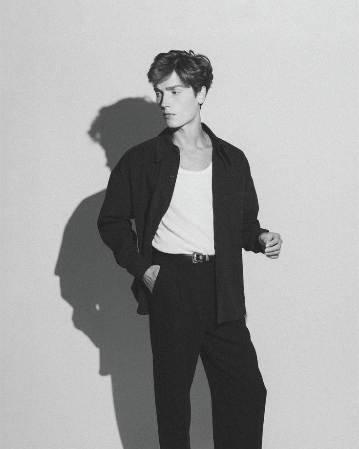
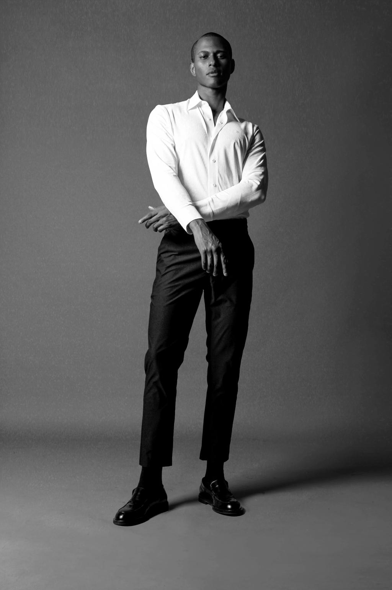

GENETICS
Genetics has the largest influence on your natural height range. Family height can provide a rough indication, but development differs from person to person.
003 / HEIGHTMAXXING
A realistic guide to growth, posture, proportions and physical presence.
THE REALITY
Your final height is influenced primarily by genetics and development. There is no reliable shortcut that can dramatically change your skeletal height.
If you're still growing, the goal is simple: support healthy development. If you've finished growing, focus on posture, proportions, fitness and clothing to improve how your frame looks.
THE FOUNDATION
Height is influenced by several factors during development. Understanding what actually matters helps you focus your effort on habits that support your natural potential.

Genetics has the largest influence on your natural height range. Family height can provide a rough indication, but development differs from person to person.
Adequate food and essential nutrients support normal development. Consistently under-eating can interfere with healthy growth.
Consistent, sufficient sleep supports overall health and normal development, particularly during adolescence.

02 / GROWTHIF YOU'RE STILL GROWING
You don't need a secret height hack. Give your body the conditions it needs to develop normally.
Maintain a regular sleep schedule and give yourself enough time to recover. Avoid making late nights a permanent habit.
Build meals around a variety of nutritious foods. Prioritize adequate calories, protein, fruits, vegetables and other essential nutrients.
Sports, resistance training and regular movement are useful for physical development and overall health.
Extreme dieting, unregulated supplements and “height pills” are not shortcuts to guaranteed growth.
Height isn't the only thing that determines how tall or imposing someone appears.
Posture, body proportions, clothing and the way you carry yourself can change your overall silhouette without changing your actual skeletal height.
BEYOND THE NUMBER
03 / VISUAL HEIGHT
Your overall presence is shaped by more than height alone. Posture, proportion, clothing and movement can all change how your frame is perceived.
Keep your head neutral, shoulders relaxed and torso naturally upright to create a cleaner vertical line.
Developing your shoulders, back and legs can make your frame appear more balanced and athletic.
Well-fitting clothing helps preserve your natural proportions and creates a more streamlined silhouette.
Coordinated colors and longer visual lines can make the body appear slightly taller and more continuous.
04 / AVOID THE TRAPS
Be skeptical of anything promising dramatic, permanent height increases without credible medical evidence.
Supplements cannot guarantee additional skeletal height.
Stretching can improve mobility and posture, but does not permanently lengthen adult bones.
Restricting food in pursuit of appearance can work against healthy development.
BUILD YOUR BEST SELF.